いつも顔が見える距離感
保育士がみんなの名前と表情を把握しやすいから、その子の興味や発達に合わせて、ていねいに声をかけます。
一人ひとりの「好き」と「安心」を大きく育てられる。
それが、ひさほ保育園のいちばんの強みです。
保育士がみんなの名前と表情を把握しやすいから、その子の興味や発達に合わせて、ていねいに声をかけます。
年齢ごとの育ちを大切にしながら、異年齢でも関わります。憧れや思いやりが、毎日の中で自然に育ちます。
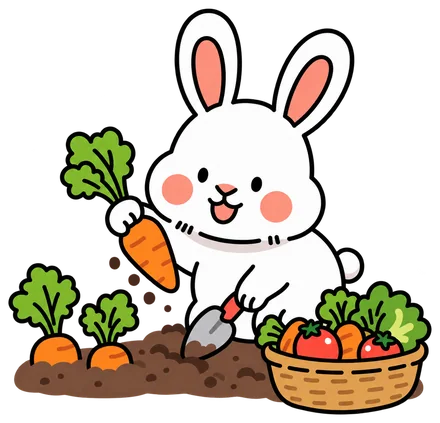
園の畑で季節の野菜を育て、みんなで収穫。自分の手で育てたものを味わう体験が、食への興味を育てます。
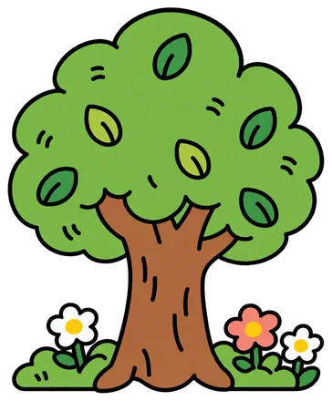
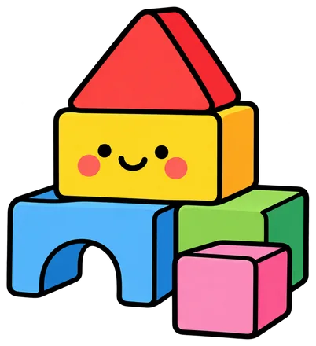
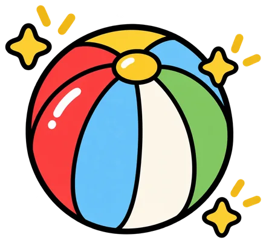
0歳のひよこ組から5歳のらいおん組まで、
発達に合わせた毎日を過ごします。
体を動かすこと、音を楽しむこと、表現すること。専門の先生と一緒に、遊びの中で「やってみたい！」を広げます。
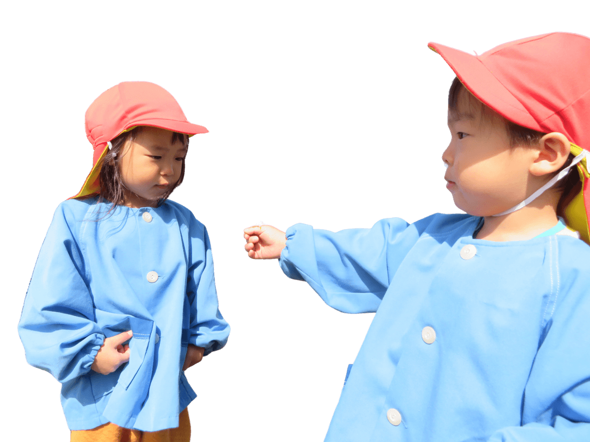
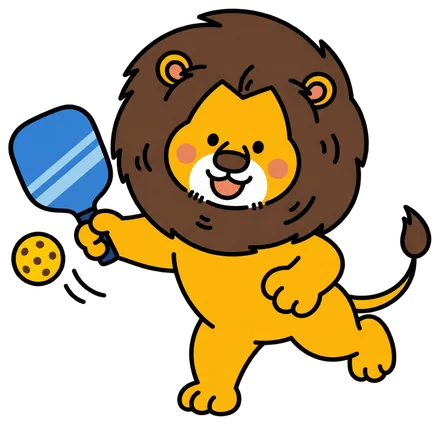
ピックル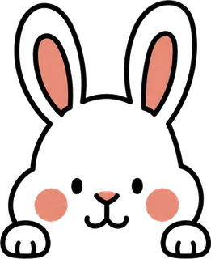
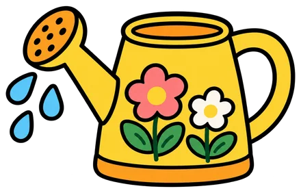
育てるところから食べるところまで、子どもたちの好奇心を食卓につなげます。
栄養士が季節感のある行事食と、野菜をたっぷり使った献立を毎月作成。おやつも離乳食も手作りです。
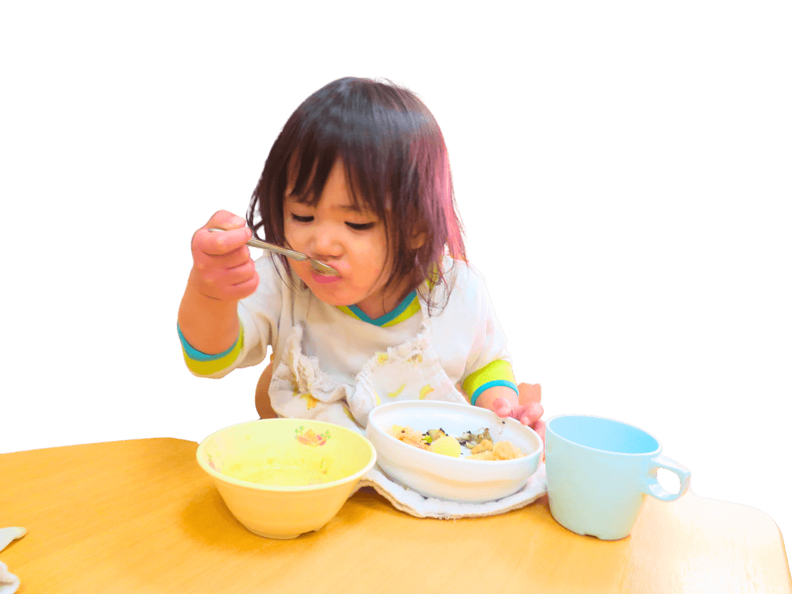
スプーンからお箸へ、年齢に合った食具へ無理なく移行。食事のマナーも楽しく身につけていきます。
園の畑で季節の野菜を育て、みんなで収穫。自分の手で育てたものを味わう体験が、食への興味を育てます。
食物アレルギーには、医師記入の生活管理指導表をもとに除去食・代替食で対応します。
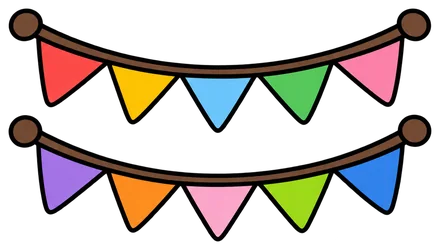
季節と地域を感じる行事を、子どもたちと一緒に大切にしています。
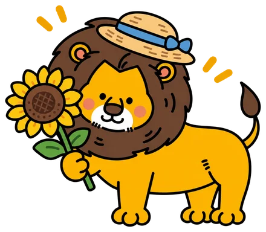
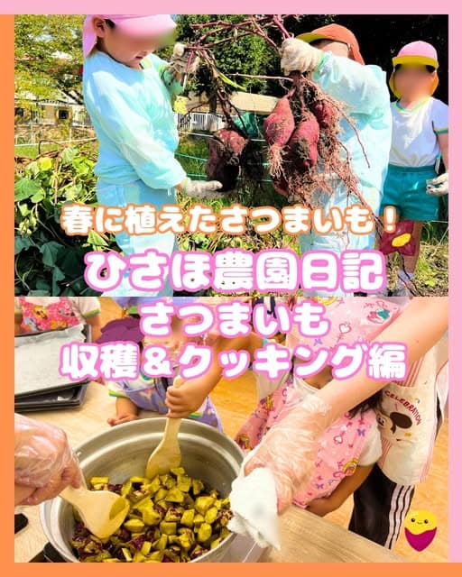
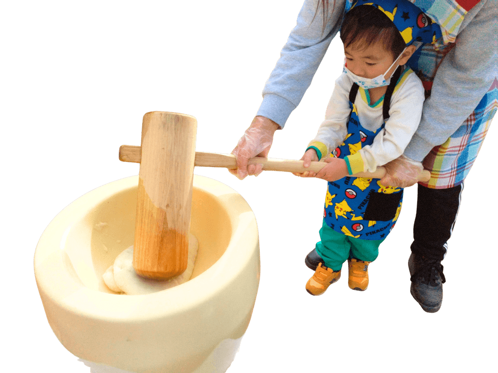
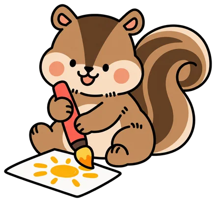
行事の様子や、日々の小さな発見を発信しています。写真をタップすると投稿が開きます。
通常保育に加えて、朝夕の延長保育や土曜保育で、働くご家庭の毎日を支えます。
ようこそひさほ保育園へ